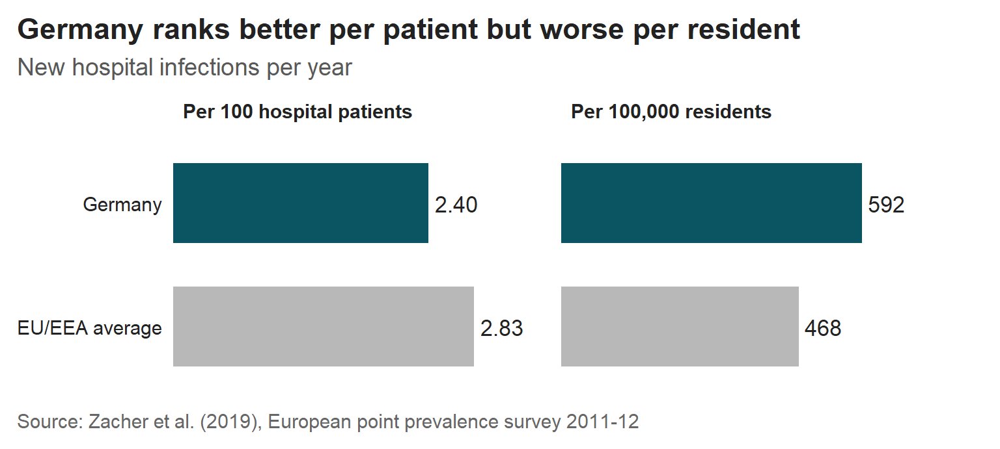

In 2011, a patient in a German hospital was slightly less likely to develop a hospital infection than the average hospital patient in Europe. Across Germany’s whole population, however, there were 27% more hospital infections per resident than the European average.
Why this matters: one infection rate, two different answers
Healthcare-associated infections are infections that patients develop as a result of medical care, such as pneumonia that begins on a hospital ward or an infection in a surgical wound. These infections lengthen hospital stays, and in Germany they contribute to thousands of deaths each year.
Comparisons of hospital safety between countries often rely on a single infection rate. That rate can be calculated per hospital patient or per resident of the country, and the two versions can rank countries in opposite orders. A 2019 study led by researchers at the Robert Koch Institute, Germany’s national public health agency, found exactly this result for Germany (Zacher et al. 2019). The study is therefore a useful example for anyone who reads a claim that one country’s hospitals are “safer” than another’s.
This post uses the study’s results to answer two questions:
- How much harm did hospital infections cause in Germany?
- Why did Germany have more hospital infections per resident when its hospitals had fewer infections per patient?
What the study found
Where the numbers come from
The evidence comes from a one-day survey of hospital patients run in 2011 and 2012 by the European Centre for Disease Prevention and Control, which covered hospitals in 30 European countries (European Centre for Disease Prevention and Control 2013). On the survey day, hospital staff recorded whether each patient had an infection caused by their care. The German sample included 9,626 patients in 46 hospitals, which were randomly selected to represent German hospitals.
Zacher et al. (2019) used a statistical model to convert this one-day snapshot into yearly estimates for the whole population, building on an earlier Europe-wide study (Cassini et al. 2016). The study covers five common infection types, which made up 79% of the hospital infections recorded in the survey, so the totals below understate the full number.
Five types of hospital infection caused about 16,000 deaths in Germany in 2011
For 2011, the study estimated that five common types of hospital infection amounted to about 478,000 cases in Germany, which caused about 16,000 deaths and 249,000 healthy years of life lost (Zacher et al. 2019). The death estimate is equivalent to about 45 deaths every day.
“Healthy years of life lost” is a plain-language name for a measure that researchers call a disability-adjusted life year (DALY). It adds together the years lost when people die early and the years people spend living with illness or disability. Using one measure allows an infection that rarely kills but causes long illness to be compared with an infection that is brief but often fatal.
To put the total in context, pneumonia caught in hospital caused more than twice as many healthy years of life lost in Germany as influenza did (69,508 compared with 33,116) (Zacher et al. 2019). All of these figures are model estimates rather than exact counts: the plausible range for deaths runs from about 10,900 to 22,800.
Per patient, Germany was below the European average; per resident, it was above
Figure 1 shows the same infections counted in two ways. Measured per 100 hospital patients, Germany’s infection rate was about 15% lower than the EU/EEA average. Measured per 100,000 residents, Germany’s rate was 27% higher.
Both rates are correct, because they answer different questions. The rate per patient answers: if I am admitted to hospital, how likely am I to develop an infection there? The rate per resident answers: how many hospital infections does the country experience relative to its population?
The authors explain the difference with the volume of hospital care in Germany. At the time of the study, Germany had the highest number of curative hospital beds in Europe and the second-highest number of hospital patients per 1,000 residents among 34 OECD countries (Zacher et al. 2019). A slightly lower infection rate for each patient, multiplied by a much larger number of patients, produced a higher infection rate for the population. The authors also suggest that good infection-control practice in German hospitals may partly explain the lower rate per patient.
Germany’s higher infection rate per resident most likely reflects the large number of people treated in its hospitals, rather than a higher risk for each patient.
Germany had more infections per resident; the gaps for deaths and healthy years lost are not clear
Table 1 compares Germany with the EU/EEA average on three measures per 100,000 residents. Germany’s estimates were higher on all three, but the study’s uncertainty ranges show that only the gap in new infections is clear. For deaths and healthy years lost, the plausible range includes values where Germany is lower than the European average, so the data cannot show that Germany was worse on those two measures.
Per 100,000 residents
|
Germany compared with EU/EEA
|
||||
|---|---|---|---|---|---|
| Measure | Germany | EU/EEA average | Estimated difference | Plausible range of the difference | Is Germany clearly higher? |
| New infections | 592 | 468 | 27% higher | +14% to +43% | Yes |
| Deaths caused by the infections | 20 | 15 | 29% higher | -22% to +118% | No: Germany could be lower |
| Healthy years of life lost | 308 | 290 | 6% higher | -32% to +67% | No: Germany could be lower |
Urinary tract infections were the most common type, but not the most harmful
The five infection types did not contribute equally to the harm. Figure 2 compares each type’s share of all infections with its share of healthy years lost. Urinary tract infections made up 45% of infections but 27% of healthy years lost. Pneumonia and bloodstream infections together made up 28% of infections but more than half of the healthy years lost, mainly because a larger share of those patients died (Zacher et al. 2019).
For readers, the practical point is that the number of infections alone does not show where the harm is. Bloodstream infections were the least common type in Figure 2, yet they caused almost as many healthy years lost as the far more common urinary tract infections.
Conclusion: ask whether a rate is per patient or per resident
This post set out to answer two questions.
How much harm did hospital infections cause in Germany? Zacher et al. (2019) estimate that five common types of hospital infection amounted to about 478,000 cases in Germany in 2011, which caused about 16,000 deaths and 249,000 healthy years of life lost. Pneumonia and bloodstream infections caused more than half of those healthy years lost, even though urinary tract infections were the most common type.
Why did Germany have more infections per resident when its hospitals had fewer infections per patient? Germany’s infection rate was about 15% lower per hospital patient but 27% higher per resident, most likely because Germany treated an unusually large number of people in hospital. For this reason, the authors recommend combining infection prevention in hospitals with reducing hospital stays that could be avoided.
Three limitations apply to these results. The figures are model estimates from a one-day survey in 2011, so they describe Germany at that time rather than today. They cover five infection types, which made up 79% of recorded hospital infections. And for deaths and healthy years lost, the data cannot confirm that Germany was worse than the European average.
When a news report states that one country’s hospitals are safer than another’s, the first question to ask is whether the infection rate is measured per patient or per resident. As this study shows, the answer can reverse the ranking.
References
Cassini, Alessandro, Diamantis Plachouras, Tim Eckmanns, et al. 2016. “Burden of Six Healthcare-Associated Infections on European Population Health: Estimating Incidence-Based Disability-Adjusted Life Years Through a Population Prevalence-Based Modelling Study.” PLoS Medicine 13 (10): e1002150. https://doi.org/10.1371/journal.pmed.1002150.
European Centre for Disease Prevention and Control. 2013. Point Prevalence Survey of Healthcare-Associated Infections and Antimicrobial Use in European Acute Care Hospitals. ECDC.
Zacher, Benedikt, Sebastian Haller, Niklas Willrich, et al. 2019. “Application of a New Methodology and R Package Reveals a High Burden of Healthcare-Associated Infections (HAI) in Germany Compared to the Average in the European Union/European Economic Area, 2011 to 2012.” Eurosurveillance 24 (46): 1900135. https://doi.org/10.2807/1560-7917.ES.2019.24.46.1900135.